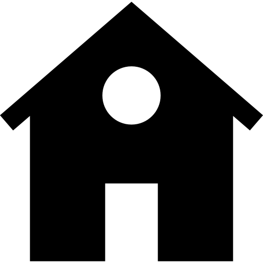

About Me

I am a Data Analyst with a diverse background in Biotechnology and in business. Born and raised in the Netherlands, I moved to the U.S in December 2018 and am currently working as a Financial Coordinator for multiple franchises in the Moving Industry. Prior to my move, I obtained a BS degree in Biotechnology from Inholland University of Applied Sciences in Amsterdam, and an MS degree in Science and Business Management from Utrecht University. During my studies I completed several research projects in laboratory settings, and gained valuable experience in conducting scientific research, analyzing and visualizing large datasets, and demonstrating my results in writing and presenting. After completing my undergraduate studies, I was increasingly interested to further develop myself in the business world. While I was skilled at doing research in a lab, I had a strong desire to apply my skills outside of an academic environment. I decided to enroll in a 2-year master’s program called Science and Business Management, a program specifically designed for students with a scientific background. I successfully finished my master’s with an internship at Accenture, where I worked on a business transformation project for one of their clients focused on the digitalization, automation and robotization of processes in all major company divisions. In line with my agricultural biotechnology background, I wrote my thesis about the future of agriculture, and how science and modern agricultural technologies can contribute to guaranteeing future food security to the developing world.
During my studies I met my wife, who already lived in the US at the time. After obtaining my MS degree I moved in with her and continued my career on the other side of the big pond. To get some experience in the US, I started out with a volunteer research position at NC State University, where I performed genetic research on Monkeyflower plants. In Fall 2019, I started with a 6-month intensive Data Analytics bootcamp at the University of North Carolina at Chapel Hill. This is where I found my true passion. All my past research and internships showed me that I am very detail-oriented and love to analyze, structure and make sense of data. The bootcamp provided me with the additional skills I needed to be successful as a Data Analyst, and as of now I continue to work on multiple projects to visualize trends, get valuable insights, launch user-friendly web-based apps and polish my skills.
Skills & Qualifications
Technical Skills
Programming Languages: Python, JavaScript, HTML, CSS, VBA
Python Libaries: Pandas, Matplotlib, Numpy, Flask, TensorFlow
JavaScript Libraries: D3, jQuery, Plotly.js, Leaflet
Professional Skills
Strong analytical skills, great attention to detail, problem solver, strong interpersonal & communication skills, financial reporting skills, project management experience, sales and consulting experience, scientific research experience.
Education
University of North Carolina | Chapel Hill, NC
Certificate in Data Analytics
Utrecht University | Utrecht, Netherlands
Master of Science: Science & Business Management
Inholland University of Applied Sciences | Amsterdam, Netherlands
Bachelor of Science: Biotechnology
Contact Information

Raleigh, NC
RemcoMooij@gmail.com